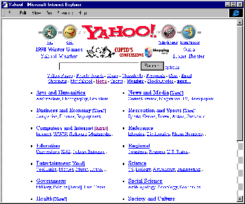
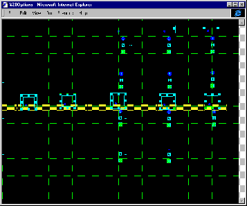
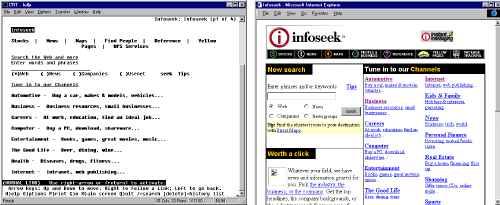

The Foundations of Web
Design
by Jeffrey
Veen
"New Thinking for a New Medium."This phrase was our mantra as a handful of us built the first version of HotWired. It was the fall of 1994. Netscape had yet to ship its first browser, Yahoo lived on a server at Stanford University, and 9,600 bps was a respectable speed for surfing the Web from your Quadra.
It's been four years since we sweated over our first Web page designs in a cramped San Francisco loft, and we've learned a tremendous amount about how to do what we do. It seemed only natural to collect and rigorously evaluate our principles for Web design.
While we've continuously explored and explained our craft within the pages of Webmonkey, we've also decided to create a manifesto of sorts in print. The book, HotWired Style: Principles for Building Smart Web Sites, represents the accumulated knowledge of the designers and technical magicians of this site and embodies our desire to remake the Web in the form of a completely new and unique medium.
The pages linked below are an introduction and companion to the ideas and techniques in the book. Consider it an electronic proclamation of the fundamentals of Web design, or a historic marker for the state of the art today. It's not a technical introduction to the process of Web design (although we link to several utilitarian Webmonkey articles). Nor is it an academic screed written from the Ivory Tower. The collection is written for any Webmonkey - from the sysadmin who needs to throw together an intranet to the experienced designer who pushes the cutting edge. Quite simply, these are the principles that guide us.
And if the Web's insane rate of growth and unrelenting change has taught us anything, it's that we are only scratching the surface of what is possible. As we continue to explore, we continue to refine.
Embrace the Technology
The heart of design is communication: defining a problem and creating a solution that balances pure information with an aesthetic that gives the message voice. The tension between form and function is the starting point for our exploration of Web design.Almost immediately after the first graphical browsers shipped, a division appeared between what we've called the "structuralists" and the "presentationalists." HTML was designed in 1992 specifically as a semantic markup language, with few layout capabilities. The underlying philosophy was that you could mark your content with descriptions - this is a headline, this is a quoted passage, etc. Then any machine in the world could interpret those tags in an appropriate way, leading to the universality of the Web as a way to distribute content.
But then the Web got really popular.
As soon as HTML began to enter the mainstream, people (notably browser companies) began to extend the language in proprietary ways to accommodate designers accustomed to having control over design and layout. They wanted control of color, fonts, and images. Solutions like the <FONT> tag, for example, gave designers control, but eliminated any semantic meaning from the content. This weakened the language, according to the structuralists.
Some designers, like Studio Verso's David Siegel, shook up the early Web by encoding entire pages into large graphics, sidestepping HTML, and making a valid point: The Web will not be an effective medium until it has the graphic power of other media.
Other designers and technologists have taken different approaches. Notably, those who've developed emerging technologies like Cascading Stylesheets, dynamic HTML, embedded fonts, and XML. These technologies are offering a future that doesn't depend on traditional approaches to design, but rather translates centuries of design heritage into the native language of the Web.
As these technologies mature, we can be optimistic that form and function will converge in a way that will make both the structuralists and presentationalists happy.
An Approach: The Library and the Gallery
The balance between form and function in Web design isn't just limited to the development of the medium's technology - it makes a great model for how you approach the problems of designing your own site.One way to formulate a design philosophy is to think of Web sites as lining up on a continuum between a library and gallery. A library's sole intent is to take inquisitive people to the information they are seeking with as little effort as possible. A gallery offers similar amounts of information, but through a much more experiential path. Maybe a better analogy would be an art gallery and a poster shop, where the same information - framed images - is organized and displayed in ways that perfectly suit the needs of each audience.
Imagine if the Yahoo Web site were structured like the game Myst, in which the thousands of site listings were hidden behind layers of mystery, requiring exploration to find them. This would be fun as an exercise in alternative information display, sure, but rather annoying when you need to find that site devoted to, say, cyclocross racing in Santa Cruz.

Yahoo, a structural and hierarchical library of information.Conversely, if a site like the experimental jodi.org were clearly constructed for the efficient consumption of information, none of the original content would be left. Would this site work if the pages were grouped by subject, or listed alphabetically? What if a powerful search engine were employed? What would you search for? The beauty of a site like jodi.org is in the experience of finding and enjoying its many hidden surprises and the underlying aesthetic.

Jodi.org, a Web gallery - the other end of the continuum.Clearly, these are extremes. But the point remains that presentation of information must adhere to its structure - form must follow function - for a Web design to be considered successful.
Know Your Code
In this new medium, a bond exists between content, design, and interactivity. Words, pictures, and code are inseparable; ignore any one and you fail to exploit the unique nature of the Web. Understanding the essence of the technology behind the Web lets you use the medium appropriately and avoid surprises, which results in intelligent content that adapts to its method of display.Good design is much more than decoration, just as well-written code will take a confusing hierarchy of data and guide an audience through layers of information to the nuggets it needs. The coordination of the two is invisible to the user when done well and painfully obvious when askew.
So it's your job to know as much as possible about all of the intertwined disciplines of publishing on the Web as you can. A good designer will understand, for example, the capabilities of JavaScript and how it can be used to solve information design problems. Similarly, a valuable engineer understands how editorial content and design can be combined to create an effective communication vehicle. Same goes for production artists, marketing managers, and any other integral part of a Web development team. And, as we've said before in Webmonkey, this strategy applies for teams of any size, even a team of one.
So where do you start this educational process? Begin with theft. All browsers have the ability to display the source code of any Web page you encounter. See something interesting? Look at how it was done. We're not talking about stealing the work of others. But imitation is the quickest path to mastery, whether you're learning to play the guitar or creating intricate Web layouts using tables.
Also, consider using reference and how-to books. Our subject collections, listed across the top of every Webmonkey page, offer our suggestions of the best books on Web-related subjects. But remember: This is the Web we're talking about, and the hyperspeed development of the technology can make books obsolete before they even leave the press. For cutting-edge information, stick to the Web.
Degrade Gracefully
Degradable Web pages - meaning pages that look good viewed in any browser on any computer - are crucial to success online. If the recent history of CD-ROMs has taught us anything, it is that making multiple versions of a single piece of content for different kinds of computers - with modes for different levels of color and resolution, installed fonts, and digital video standards - is not good for the bottom line. The Web stands as an attempt to avoid that mess. Peel away the flash and hype surrounding the Web, and you'll find the beauty and elegance of an inclusive electronic publishing system. Based on a simple foundation, the World Wide Web can serve the information needs of any user, with any device, at any speed - but only when sites are created by smart authors who plan ahead and make intelligent media. Today's Web is slipping into a proprietary world of competing technologies, and only by understanding this dilemma at its core can those creating content come out ahead.

Low end versus high end - same content, different browsers.
For example, cutting-edge browser features can give your pages the look you're after, but at what cost? Does it matter that only 70 percent of your audience can see the version you intended? How can you even tell who can see what?
Begin by matching features with information. As we've said all along, design must always match content. If you've determined that your page absolutely must employ something like Cascading Stylesheets, then find out just how many users are going to see them. Sites like Browserwatch, Webtrends, and Webmonkey's Browser page all offer research and current data on who is surfing with what, which browsers support which technologies, and the current state of the so-called browser wars. Then, armed with your research, you can make accurate decisions on how much effort you should put into the "low-end" versions of your site.
For example, if you were to embed a QuickTime movie or Java applet in your page, you should consider layering the code so that members of your audience without those capabilities are able to at least see something. Since tags like <embed> are containers as well as replaced elements, you can insert other markup in their place for people whose browsers don't support them - like an image representation or textual description of what they can't see.
There really is no limit to the amount of degradability you can put into your pages. From the ALT attribute on image tags, to JavaScript-based sniffers in the head of your document, to complete server-side content negotiation systems, you'll find dozens of ways to keep your sites open and accessible to all.
Jeffrey Veen is a founding partner of the user experience consultant group Adaptive Path. He spends far too much time traveling the world in search of the perfect burrito. He also wrote a couple excellent Web design books.
Feedback | Help | About Us | Jobs | Advertise | Privacy Statement | Terms of Service
Copyright © 1994-2004 Wired Digital Inc., a Lycos Network site. All rights reserved.